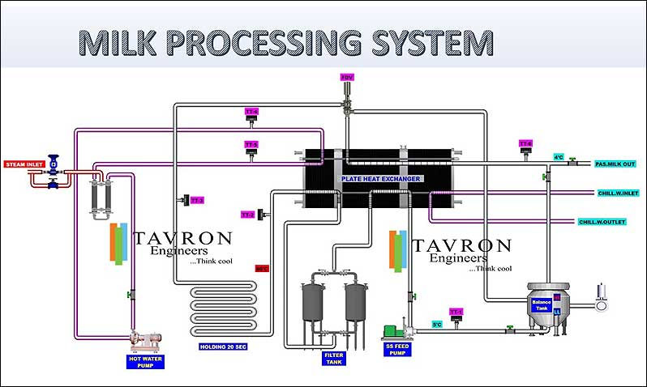
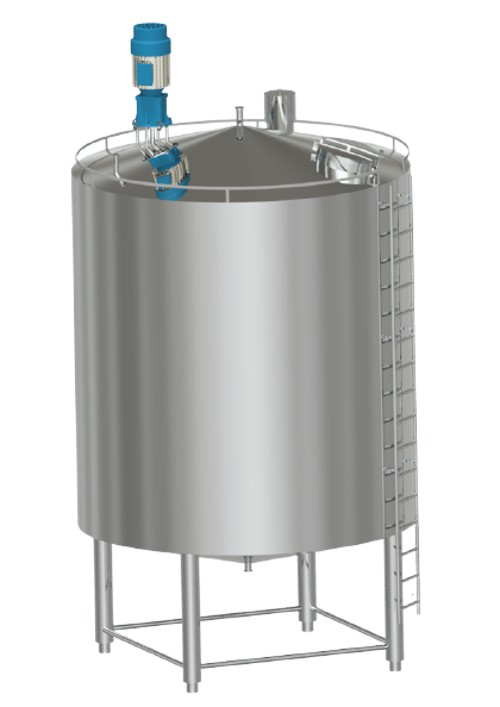

- Home
- Turnkey solutions
- Liquid milk
Liquid milk processing plants
From raw milk storage to packing: tanks, pumps, HTST pasteurisation, ice water and CIP, designed, built and commissioned as one plant by Tavron Engineers, Chennai.
Scroll sideways to follow the line.
- Milk
- Steam
- Ice water
- CIP supply
| No. | Equipment | Specification |
|---|---|---|
| 1 | Raw milk storage | PUF-insulated SS 304 / SS 316 tanks, 2,000 to 10,000 L, rotary spray ball for CIP |
| 2 | Pumps | SS centrifugal, 500 to 1,00,000 LPH, head up to 60 MWC |
| 3 | HTST pasteurizer | Plate heat exchanger with regeneration, holding tube and balance tank; at least 74 °C for 20 seconds |
| 4 | Pasteurised milk storage | As item 1, with agitator, temperature transmitter and hygienic outlet valves |
| 5 | Ice bank | Freon, for 1,000 to 20,000 LPD; ammonia, for 10,000 to 5,00,000 LPD |
| 6 | CIP unit | Single or multiple circuits, automatic or semi-automatic |
- Title
- Liquid milk processing plant
- Pasteurisation
- HTST, 50 to 30,000 LPH
- Operation
- Manual or automatic
- Control
- PLC with SCADA
- Cleaning
- CIP
- Scope
- Turnkey
- Scale
- Not to scale
- Made by
- Tavron Engineers, Chennai. ISO 9001:2015
The whole line on one screen
Plants run manually or automatically. Automatic plants use PLC control, with a SCADA screen of the whole line.

Ice water, sized to the milk
The ice bank stores enough ice to cool the plant's designed milk capacity.
- Freon ice bank
For 1,000 to 20,000 LPD. R22, R404A or another Freon on request; scroll or reciprocating compressor; mild steel or stainless-steel construction.
- Ammonia ice bank
For 10,000 to 5,00,000 LPD, and larger on request. Atmospheric, shell-and-tube, plate or evaporative condenser. Return water chiller, falling film chiller and glycol system as options.
The equipment, built
Click a photo to see it larger.




Planning a liquid milk plant?
Send us three things and we'll come back with a scheme and a budget.
- How much milk a day, in litres
- Your product mix: milk, curd, flavoured milk, anything else
- The site: building, space and utilities